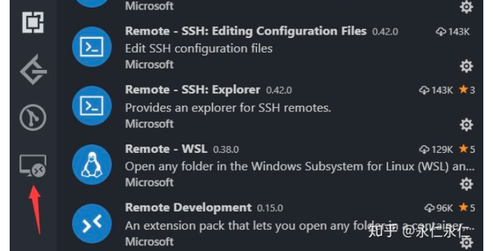
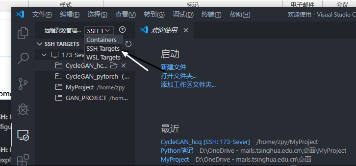
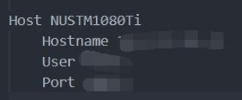
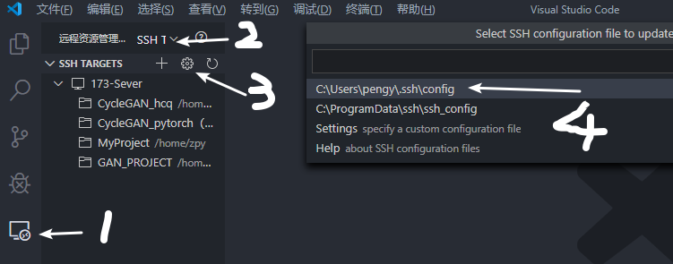

远程服务器进行debug的方法
在Vscode中下载
Remote Development插件，安装完毕后侧边栏会出现下图图标
点击此图标，选择
SSH Target，并在随后显示的栏目中输入远程主机的地址：root@ip-sever
在配置文件中填写图下信息

Host表示别名，可以给远程主机取个名字Hostname表示远程主机的ip地址User表示用户名Port表示用于登陆远程主机的端口（可以不写，我写了就不能连接，不知道为什么）除了上述方法外，也可以使用下图的方式进入相关的配置文件

远程服务器免密登陆的方式（亦为SSH免密登录）
注：曾经尝试过很多方法，都是知其然不知其所以然，也不清楚为什么不好使，这些不好使的方法有
- 使用WinScp手动拷贝本机公钥到远程服务器上，然后执行
$ cat id_rsa.pub >> ~./.ssh/autorized_keys
- 使用WinScp手动拷贝本机公钥到远程服务器上，然后执行
好使的方法有，参考链接
（上述链接中”修改ssh配置“的步骤没有执行，因为没找到对应的文件。）
首先要有本机的公私钥，如果没有，先去生成，这里。
将本地的公钥安装到远程主机上：在本地主机中的ssh或者git bash中执行命令
1
$ ssh-copy-id -i id_rsa.pub root@ip_sever
（如果不好使，尝试命令：
$ ssh-copy-id root@ip_sever）随后到远程主机上查看
.ssh/目录下的authorized_keys文件中是不是有了本地主机的公钥，这一步可以用$ cat命令
测试：在本机上执行下列命令，若直接登录不用输入密码即为成功
1
$ ssh root@ip_sever
随后修改Vscode中的设置：在远程服务器信息中，添加如下信息：
1
IdentityFile: "C:\Users\用户名\.ssh\id_rsa"